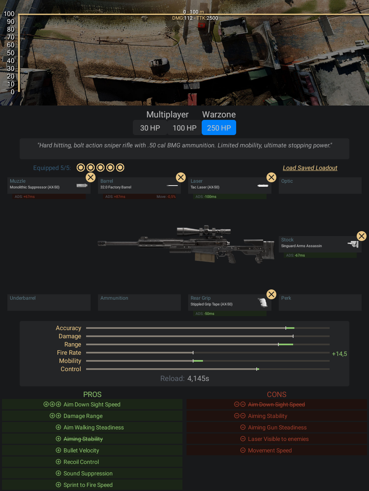

Com força de impacto, é um fuzil de precisão com ação por ferrolho com munição
BMG de .50 cal. Suas balas de tungstênio são rápidas e poderosas, mas que requerem
disparos precisos à longa distância.
- Pontos Positivos:
- -Ela mira um pouco mais ligeiro que a HDR
- -Não é muito difícil calcular a trajetória da bala para longas distâncias
- Pontos Negativos:
- -É a mais demorada para se carregar comparada as outras
Informações e dicas de como fazer uma classe da AX-50:
Acessórios para AX-50:
- Boca - Surpressor Monolítico
- Cano - Cano de Fábrica 32.0
- Laser - Laser Tático
- Coronha - Singuard Arms Assassin
- Cabo - Fita Aderente Pontilhada